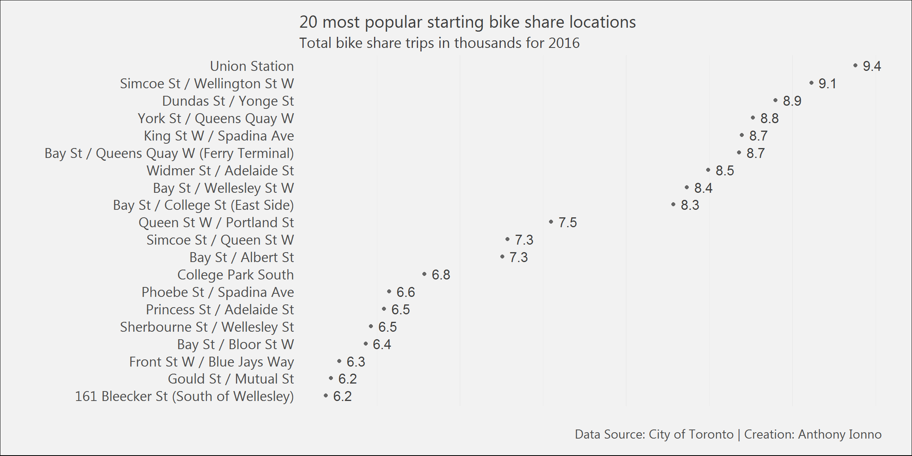

In this post I explore anonymized bike-share trip data, posted on the City of Toronto’s Open Data website, and identify some key learnings surrounding trips made within Toronto’s bike-share system. Specifically, I develop a better understanding of how long an individual spends riding their bike, when that person is most likely going to rent a bike, and from where.
The data shows that for a majority of bike trips in 2016, over 90%, were shorter than 30 minutes and that, depending on the month, the median bike trip was somewhere between 9 to 12 minutes long; however, these results are heavily dependent on whether a rider had a membership with Bike Share Toronto. Participants with a membership rode their bike for 11 minutes, compared to non-members, who rode for 30 minutes, on average.
The most popular starting location in Toronto is Union Station; the least popular starting location is Danforth Avenue and Westlake Avenue, just near Main Street subway station. Individuals that start at a top-20 location typically spend less time on their bike than those that do not.
Over 11% of bike trips occurred between 11 pm and 1 am in 2016; a higher proportion of total bike trips occurred weekdays around 11 am and 8pm. This is a strange finding, especially given that in 2014 and 2015 a higher proportion of bike trips happened around 8 am and 5 pm.
Scroll down to look at all the visualizations that informed this analysis. The extra visualization illustrates all the bike trips coming out of Union Station for 2016. The size of the circle indicates which stations were the most population ending station from Union Station.
The raw data used to conduct this analysis can be located on the City of Toronto’s open data website and contains annonymized bike trip information for the last two quarters of 2016, which is broken down by:
More information on this dataset can be located here.
The R markdown file for this post is located on my GitHub page.
I would recommend that you take care with the Bikeshare Ridership (2016 Q4) file as the trip_start_time and trip_stop_time columns are not the same data-type row-by-row. I avoided the issue by only capturing the hour and minutes information with the two variables mentioned above.
Another issue is that the Bike Share Toronto JSON feed, that provides system information, contains bike station information, specifically bike station names, that differ from those in the Bikeshare Ridership datasets.
I’ve reached out to the Open Data team to confirm whether an adjustment can be made to the Bike Ridership datasets.
Update: Since I commented on the two issues above the Open Data team has posted new 2014-2015 information on Bike Share data, it seems that the first issue still remains but that the second issue is partially resolved. Some stations still appear to be missing.
The following R libraries are loaded for this analysis.
library(jsonlite);library(rjson)
library(tidyverse);library(magrittr);library(car)
library(GGally);library(extrafont);library(forcats)
library(readxl);library(tmap);library(ggmap)
library(DT);library(leaflet);library(plotly)The individual bike trip datasets are read into R and modified. A custom ggplot2 theme is defined for the subsequent data visualizations.
# Reading bike share data
bikeshare2016q3_df<-readxl::read_excel("Data/2016_Bike_Share_Toronto_Ridership_Q3.xlsx")
bikeshare2016q4_df<-readxl::read_excel("Data/2016_Bike_Share_Toronto_Ridership_Q4.xlsx",
col_types = c("numeric","text","text","numeric", "text", "text","text"))
bikeshare2016q4_df<- bikeshare2016q4_df %>%
mutate(trip_start_time=as.POSIXct(strptime(trip_start_time, "%d/%m/%Y %H:%M")),
trip_stop_time=as.POSIXct(strptime(trip_stop_time, "%d/%m/%Y %H:%M")))
# Reading bike share station data
json_file <- "https://tor.publicbikesystem.net/ube/gbfs/v1/en/station_information"
json_data <- jsonlite::fromJSON(txt=json_file, flatten = TRUE)
json_df<-json_data$data$stations
# Combine Q3:4 bikeshare data
bikeshare2016_df<-rbind(bikeshare2016q3_df,bikeshare2016q4_df)
# Custom ggplot theme
theme_ai <- function(){
theme_minimal() +
theme(
text = element_text(family = "Segoe UI", color = "gray25"),
plot.title = element_text(size=16),
plot.subtitle = element_text(size = 14),
axis.text = element_text(size=13),
plot.caption = element_text(color = "gray30", size=12),
plot.background = element_rect(fill = "gray95"),
plot.margin = unit(c(5, 10, 5, 10), units = "mm"),
#axis.line = element_line(color="gray50")
axis.ticks.x = element_line(color="gray35"),
panel.grid.major.y = element_line(colour = "gray80"))
}
# Create additional temporal variables
bikeshare2016_df<-bikeshare2016_df%>%
mutate(DayofWeek=format(trip_start_time,"%u"),Hour=as.numeric(format(trip_start_time,"%H")),Month=format(trip_start_time,"%h"),
Weekend=ifelse(DayofWeek %in% c(6,7),"Weekend","Weekday"))
# Reading in 2014 and 2015 data
# Read in sheets 14:15
weekday.data<-read_xlsx("Data/2018-04-23_Updated data/2014Q4_to_2015Q3_Bike_Share_Toronto_Ridership.xlsx",sheet = 15)
weekend.data<-read_xlsx("Data/2018-04-23_Updated data/2014Q4_to_2015Q3_Bike_Share_Toronto_Ridership.xlsx",sheet = 14)
names(weekend.data)<-weekend.data[1,]
names(weekday.data)<-names(weekend.data)
weekend.data<-weekend.data[-1,];weekend.data<-weekend.data[-nrow(weekend.data),]
weekday.data<-weekday.data[-1,];weekday.data<-weekday.data[-nrow(weekday.data),]
weekend.data<-weekend.data %>%
mutate(Hour=0:23, Weekend="Weekend")
weekday.data<-weekday.data %>%
mutate(Hour=0:23, Weekend="Weekday")
weekend.data$Total<-as.integer(weekend.data$Total);weekday.data$Total<-as.integer(weekday.data$Total)
weekday.weekend.data<-rbind(weekday.data,weekend.data)In the analysis below the red histogram is meant to represent information relating to top 20 locations only.
########################
# Exploratory analysis
########################
# Histogram of trip duration in minutes
ggplot(data=bikeshare2016_df)+
geom_histogram(aes(x=trip_duration_seconds/60, y=(..count..)*100/sum(..count..)),fill='gray65',col="gray40")+
theme_ai()+
labs(title="93% of bike share trips are under 30 minutes",
subtitle="Total bike share trips in 2016",
x="Trip Duration in Minutes",
y="Percent of Total",
caption="Data Source: City of Toronto | Creation: Anthony Ionno")+
scale_y_continuous(breaks=seq(0,100,20))+
scale_x_continuous(breaks=seq(0,250,30))# Dot plot of the top 20 starting bike-share locations (number of visits)
bikeshare2016_df %>%
group_by(from_station_name) %>%
tally() %>%
top_n(20) %>%
arrange(desc(n)) %>%
mutate(n=n/1000,from_station_name=fct_reorder(from_station_name,n,last)) %>%
ggplot()+
geom_point(aes(y=from_station_name, x=n), fill='gray10', col="gray40")+
geom_text(aes(y=from_station_name, x=n,label=round(n,1), hjust=-0.4), col="gray25", size=4.5)+
theme_ai()+
theme(axis.text.x = element_blank(),
panel.grid.major.y = element_blank())+
labs(title="20 most popular starting bike share locations",
subtitle="Total bike share trips in thousands for 2016",
x="",
y="",
caption="Data Source: City of Toronto | Creation: Anthony Ionno")
This figure shows the location of the top-20 starting locations.
# Geo-spatial map showing top 20 starting locations
top20locations<-bikeshare2016_df %>%
group_by(from_station_name) %>%
tally() %>%
top_n(20) %>%
arrange(desc(n))
json_df2<-filter(json_df,address %in% top20locations$from_station_name)
leaflet(data = json_df2) %>%
#addProviderTiles(providers$MtbMap) %>%
#addProviderTiles(providers$Stamen.TonerLines,
# options = providerTileOptions(opacity = 0.35)) %>%
#addProviderTiles(providers$Stamen.TonerLabels) %>%
addTiles( urlTemplate = "http://{s}.tiles.wmflabs.org/bw-mapnik/{z}/{x}/{y}.png") %>%
addMarkers(~lon, ~lat, popup = ~as.character(json_df2$address),
label = ~as.character(json_df2$address))# Histogram overlaying trip duration from top 20 locations vs. others
ggplot()+
geom_histogram(data=filter(bikeshare2016_df, !(from_station_name %in% top20locations$from_station_name)),
aes(x=trip_duration_seconds/60, y=(..count..)*100/sum(..count..)),fill='gray65',col="gray40")+
geom_histogram(data=filter(bikeshare2016_df,from_station_name %in% top20locations$from_station_name),
aes(x=trip_duration_seconds/60, y=(..count..)*100/sum(..count..)),fill="firebrick3",col="gray40",alpha=.2)+
theme_ai()+
labs(title="Bike share trips are shorter, on average, at a top 20 starting location",
subtitle="Total bike share trips in 2016",
x="Trip Duration in Minutes",
y="Percent of Total",
caption="Data Source: City of Toronto | Creation: Anthony Ionno")+
scale_y_continuous(breaks=seq(0,100,20))+
scale_x_continuous(breaks=seq(0,250,30))bikeshare2016_df %>%
group_by(Month) %>%
summarise(duration=median(trip_duration_seconds/60),count=n()) %>%
mutate(Month=as.factor(Month),Month=fct_reorder(Month,duration,last)) %>%
ggplot()+
geom_point(aes(y=Month, x=duration), fill='gray10', col="gray40")+
geom_text(aes(y=Month, x=duration,label=round(duration,1), hjust=-0.4), col="gray25", size=4.5)+
theme_ai()+
theme(axis.text.x = element_blank(),
panel.grid.major.y = element_blank())+
labs(title="People bike for a longer period of time in the summer\nthan in the winter, woah",
subtitle="Median bike share trip duration by month for 2016",
x="",
y="",
caption="Data Source: City of Toronto | Creation: Anthony Ionno")# Histogram of trips by month broken down by top 20 locations vs. others
ggplot()+
geom_bar(data=filter(bikeshare2016_df, !(from_station_name %in% top20locations$from_station_name)),
aes(x=Hour,y=(..count..)*100/sum(..count..)),fill='gray65',col="gray40")+
geom_bar(data=filter(bikeshare2016_df,from_station_name %in% top20locations$from_station_name),
aes(x=Hour,y=(..count..)*100/sum(..count..)),fill="firebrick3",col="gray40",alpha=.2)+
theme_ai()+
labs(title="11% of bike share trips occur between 11 pm and 1 am",
subtitle="Total bike share trips in 2016",
x="Hour of the Day",
y="Percent of Total",
caption="Data Source: City of Toronto | Creation: Anthony Ionno")+
scale_y_continuous(breaks=seq(0,10,2))+
scale_x_continuous(breaks=seq(0,23,1))ggplot()+
geom_bar(data=bikeshare2016_df,
aes(x=Hour,y=(..count..)*100/sum(..count..)),fill='gray65',col="gray40")+
theme_ai()+
labs(title="A higher proportion of bike share trips occur weekdays around 11 am and 8 pm",
subtitle="Total bike share trips in 2016",
x="Hour of the Day",
y="Percent of Total",
caption="Data Source: City of Toronto | Creation: Anthony Ionno")+
scale_y_continuous(breaks=seq(0,10,2))+
scale_x_continuous(breaks=seq(0,23,1))+
facet_grid(Weekend~.)ggplot()+
geom_col(data=weekday.weekend.data,
aes(x=Hour,y=Total*100/sum(Total)),fill='gray65',col="gray40")+
theme_ai()+
labs(title="A higher proportion of bike share trips occur weekdays around 8 am and 5 pm",
subtitle="Total bike share trips in 2014 and 2015",
x="Hour of the Day",
y="Percent of Total",
caption="Data Source: City of Toronto | Creation: Anthony Ionno")+
scale_y_continuous(breaks=seq(0,10,2))+
scale_x_continuous(breaks=seq(0,23,1))+
facet_grid(Weekend~.)## R version 3.4.1 (2017-06-30)
## Platform: x86_64-w64-mingw32/x64 (64-bit)
## Running under: Windows 7 x64 (build 7601) Service Pack 1
##
## Matrix products: default
##
## locale:
## [1] LC_COLLATE=English_United States.1252
## [2] LC_CTYPE=English_United States.1252
## [3] LC_MONETARY=English_United States.1252
## [4] LC_NUMERIC=C
## [5] LC_TIME=English_United States.1252
##
## attached base packages:
## [1] stats graphics grDevices utils datasets methods base
##
## other attached packages:
## [1] RevoUtilsMath_10.0.0 RevoUtils_10.0.5 RevoMods_11.0.0
## [4] MicrosoftML_1.5.0 mrsdeploy_1.1.2 RevoScaleR_9.2.1
## [7] lattice_0.20-35 rpart_4.1-11
##
## loaded via a namespace (and not attached):
## [1] Rcpp_0.12.12 codetools_0.2-15 CompatibilityAPI_1.1.0
## [4] rprojroot_1.2 digest_0.6.12 foreach_1.4.4
## [7] grid_3.4.1 R6_2.2.0 backports_1.1.0
## [10] jsonlite_1.4 magrittr_1.5 evaluate_0.10.1
## [13] stringi_1.1.5 curl_2.6 rmarkdown_1.6
## [16] iterators_1.0.8 tools_3.4.1 stringr_1.2.0
## [19] yaml_2.1.14 compiler_3.4.1 htmltools_0.3.6
## [22] knitr_1.17